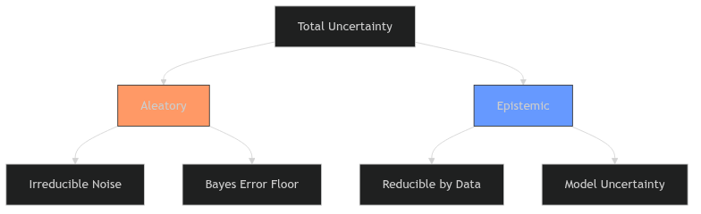
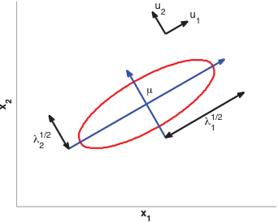
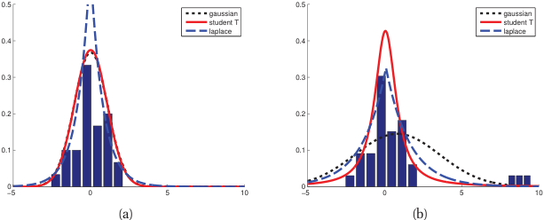
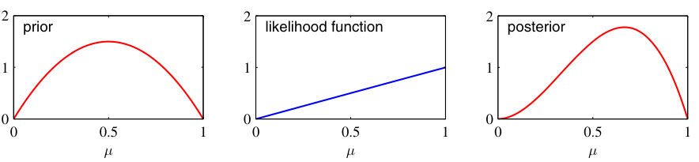
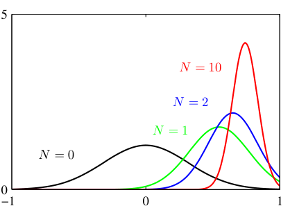
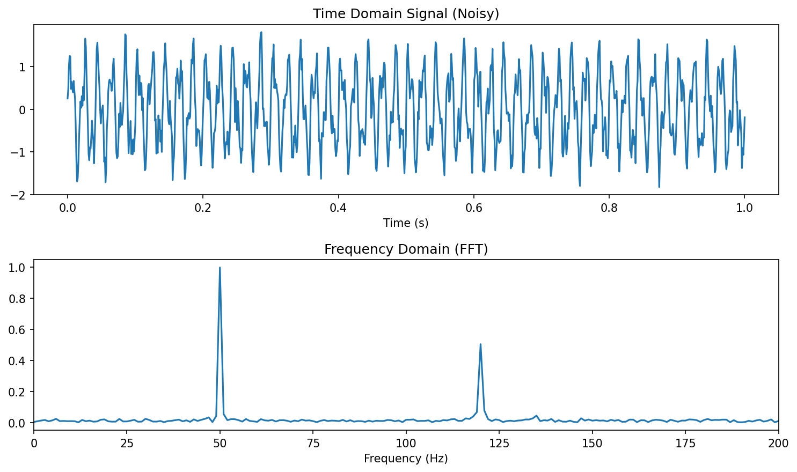
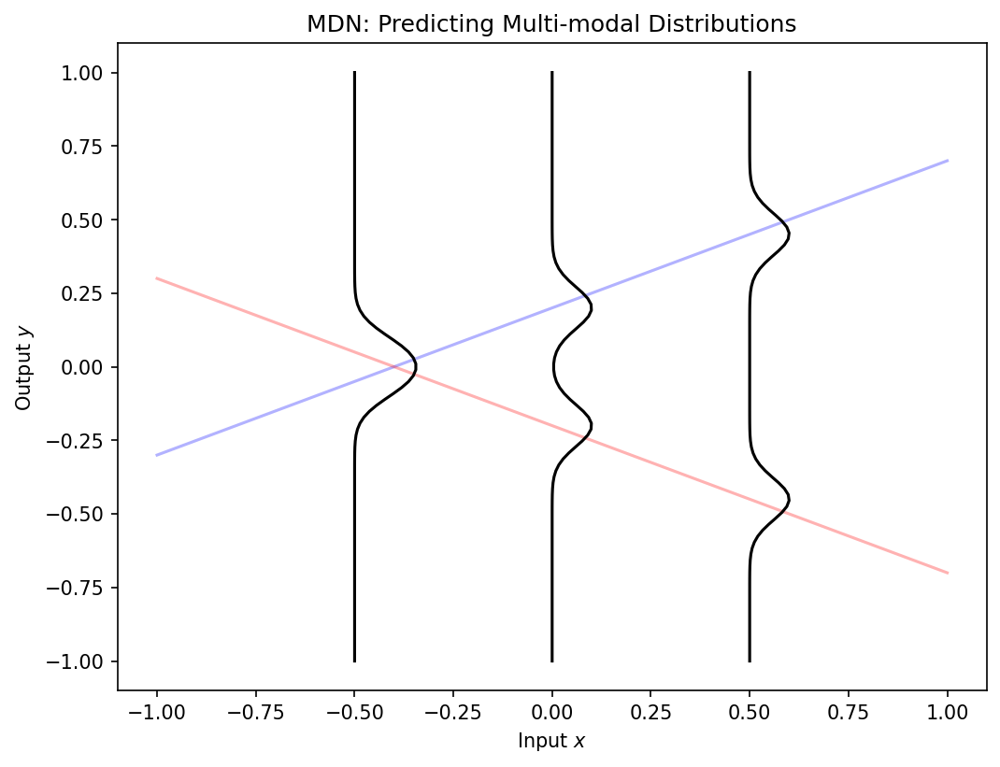

true_func = (x) => Math.sin(x * Math.PI) + 0.5 * x;
// Generate Data
unc_data = {
const points = [];
const rng = d3.randomNormal(0, aleatory_noise);
for (let i = 0; i < n_samples_unc; i++) {
const x = d3.randomUniform(-2, 2)();
points.push({x: x, y: true_func(x) + rng()});
}
return points.sort((a,b) => a.x - b.x);
}
// Fit a simple polynomial (degree 3) for the epistemic uncertainty band
// Instead of complex regression, let's just use a confidence interval approach
// width of CI shrinks as 1 / sqrt(N)
unc_ci_width = aleatory_noise * 1.96 / Math.sqrt(n_samples_unc);
unc_curve = d3.range(-2, 2.001, 0.02).map(x => ({
x: x,
y: true_func(x),
lo: true_func(x) - unc_ci_width,
hi: true_func(x) + unc_ci_width
}));
Plot.plot({
width: 1200,
height: 650,
marginLeft: 60,
marginBottom: 50,
style: {background: "transparent", color: "#e2e8f0", fontSize: "18px"},
x: {domain: [-2.1, 2.1], label: "x", grid: true},
y: {domain: [-3, 3], label: "y", grid: true},
marks: [
Plot.areaY(unc_curve, {x: "x", y1: "lo", y2: "hi", fill: "#38bdf8", fillOpacity: 0.35, title: "Epistemic Uncertainty"}),
Plot.line(unc_curve, {x: "x", y: "lo", stroke: "#38bdf8", strokeWidth: 2}),
Plot.line(unc_curve, {x: "x", y: "hi", stroke: "#38bdf8", strokeWidth: 2}),
Plot.line(unc_curve, {x: "x", y: "y", stroke: "#fde047", strokeWidth: 5, strokeDasharray: "12 8", title: "True Process"}),
Plot.dot(unc_data, {x: "x", y: "y", r: 5, fill: "#ff4d4d", stroke: "#ffffff", strokeWidth: 0.8, fillOpacity: 0.9, title: "Observation"})
]
})Mathematical Foundations of AI & ML
Unit 7: The Probabilistic View of Learning; Conformal Prediction
Prof. Dr. Philipp Pelz
FAU Erlangen-Nürnberg


Title + Unit 7 positioning
- Units 1–6 built the optimization machinery for learning.
- Unit 7 introduces the probabilistic foundations that underlie everything.
- Probability is the language of uncertainty — and learning is fundamentally about reasoning under uncertainty.
- We close the unit with conformal prediction: a distribution-free coverage guarantee that any downstream UQ method can plug into.
Recap: what risk minimization assumes
- Unit 1: \(\hat{\boldsymbol{\theta}} = \arg\min_{\boldsymbol{\theta}} \mathbb{E}_{(\mathbf{x},y) \sim P}[L(f_{\boldsymbol{\theta}}(\mathbf{x}), y)]\).
- The expectation is over a probability distribution \(P\) of data.
- Until now, we treated this as a mathematical abstraction. Now we make it concrete.
Learning outcomes for Unit 7
By the end of this lecture, students can:
- classify uncertainty as aleatory or epistemic and explain why this matters,
- write the Gaussian in 1D and multivariate form and explain its maximum-entropy property,
- compute and interpret KL divergence between distributions, in particular the closed form between two Gaussians,
- derive the MLE for Gaussian parameters and connect it to MSE minimization,
- apply Bayes’ theorem to update prior beliefs into posterior distributions,
- apply split conformal prediction to wrap any predictor with a finite-sample coverage guarantee, and recognise when the exchangeability assumption breaks.
Why probability is the language of learning
- Data is inherently noisy — repeated measurements give different results.
- Models are uncertain — finite data cannot determine parameters exactly.
- Probability provides a consistent, rigorous framework for quantifying both.
- Without probability, we cannot define what “learning from data” means.
Aleatory uncertainty — definition
- Aleatory (from Latin alea = dice): irreducible randomness in the data-generating process.
- Examples: thermal noise in sensors, quantum measurement, turbulent flow variability.
- No amount of additional data or better models can eliminate aleatory uncertainty.
- It sets a floor on achievable prediction error (the Bayes error — formally treated in Unit 8 with the bias-variance decomposition).
Epistemic uncertainty — definition
- Epistemic (from Greek episteme = knowledge): uncertainty from limited knowledge.
- Reducible by collecting more data, improving the model, or adding features.
- Examples: parameter uncertainty with small \(N\), model misspecification, missing variables.
- Epistemic uncertainty decreases as the training set grows.
Why the distinction matters

Uncertainty breakdown
- Aleatory uncertainty: set appropriate error bars; do not waste resources trying to reduce it.
- Epistemic uncertainty: invest in data collection or model improvement.
- Confusing the two leads to wasted effort (trying to reduce noise) or false confidence (ignoring model uncertainty).
- Engineering systems must handle both types appropriately (Neuer et al. 2024).
Interactive: Aleatory vs. Epistemic Uncertainty
- The yellow dashed line is the true, hidden process.
- The red dots are sampled data. Their spread around the true process is aleatory uncertainty (irreducible noise).
- The cyan band represents our model’s confidence in the mean (epistemic uncertainty).
- Try it: Increase
N. Notice how the cyan band shrinks, but the red dots remain scattered.
The sampling process
- Data is a collection of realizations from a random process.
- The sampling rate, resolution, and digitization affect what information is preserved.
- Insufficient sampling introduces systematic errors that no model can correct.
Engineering example: sensor data and uncertainty sources
- A temperature sensor measuring a furnace:
- Aleatory: thermal fluctuations (\(\pm 2°C\) at steady state).
- Epistemic: calibration drift (systematic, correctable with recalibration).
- An ML model trained on this data must account for both sources to make reliable predictions.
Random variables and probability distributions
- A random variable \(X\) maps outcomes to numbers.
- Discrete: probability mass function \(P(X = x)\).
- Continuous: probability density function \(p(x)\) where \(\int p(x)\,dx = 1\).
- The PDF gives relative likelihood — not probability — at each point.
Expected value and variance
- Expected value (mean): \(\mu = \mathbb{E}[X] = \int x \, p(x) \, dx\).
- Variance: \(\sigma^2 = \text{Var}[X] = \mathbb{E}[(X - \mu)^2]\).
- Standard deviation: \(\sigma = \sqrt{\text{Var}[X]}\) — same units as \(X\).
- The mean locates the distribution; the variance measures its spread.
Higher moments: skewness and kurtosis
- Skewness \(= \mathbb{E}\left[\left(\frac{X-\mu}{\sigma}\right)^3\right]\): measures asymmetry (0 for symmetric distributions).
- Kurtosis \(= \mathbb{E}\left[\left(\frac{X-\mu}{\sigma}\right)^4\right]\): measures tail heaviness (3 for the Gaussian).
- Excess kurtosis \(= \text{kurtosis} - 3\): deviation from Gaussian tail behavior.
The Gaussian distribution (1D)
\[ p(x \mid \mu, \sigma^2) = \frac{1}{\sqrt{2\pi\sigma^2}} \exp\!\left(-\frac{(x-\mu)^2}{2\sigma^2}\right) \]
- Completely characterized by two parameters: mean \(\mu\) and variance \(\sigma^2\).
- Symmetric, unimodal, bell-shaped.
- The 68-95-99.7 rule: probability within \(1\sigma, 2\sigma, 3\sigma\) of the mean.
Interactive: The 1D Gaussian & Empirical Rule
gaussian_pdf = (x, mu, sigma) => {
const variance = sigma * sigma;
return (1 / Math.sqrt(2 * Math.PI * variance)) * Math.exp(-Math.pow(x - mu, 2) / (2 * variance));
}
g_x_vals = d3.range(-6, 6.05, 0.05);
g_data = g_x_vals.map(x => ({x: x, y: gaussian_pdf(x, g_mean, g_std)}));
Plot.plot({
width: 800,
height: 350,
style: {background: "transparent", color: "#e2e8f0", fontSize: "14px"},
x: {domain: [-6, 6], label: "x", grid: true},
y: {domain: [0, 4.2], label: "Density p(x)", grid: true},
marks: [
// 3 sigma
show_intervals.includes("3σ (99.7%)") ? Plot.areaY(g_data.filter(d => d.x >= g_mean - 3*g_std && d.x <= g_mean + 3*g_std), {x: "x", y: "y", fill: "#ffbaba", fillOpacity: 0.5}) : null,
// 2 sigma
show_intervals.includes("2σ (95%)") ? Plot.areaY(g_data.filter(d => d.x >= g_mean - 2*g_std && d.x <= g_mean + 2*g_std), {x: "x", y: "y", fill: "#ff7b7b", fillOpacity: 0.6}) : null,
// 1 sigma
show_intervals.includes("1σ (68%)") ? Plot.areaY(g_data.filter(d => d.x >= g_mean - 1*g_std && d.x <= g_mean + 1*g_std), {x: "x", y: "y", fill: "#ff5252", fillOpacity: 0.8}) : null,
// PDF Line
Plot.line(g_data, {x: "x", y: "y", stroke: "white", strokeWidth: 3}),
// Mean Line
Plot.ruleX([g_mean], {stroke: "white", strokeDasharray: "4,4"})
]
})- Modifying the Mean (\(\mu\)) shifts the distribution left or right. It represents the center of mass.
- Modifying the Standard Deviation (\(\sigma\)) stretches the distribution.
- Notice that the peak height drops as it stretches, to ensure the total area (probability) always integrates to 1.
Why the Gaussian is special: maximum entropy
- Among all distributions with a given mean \(\mu\) and variance \(\sigma^2\), the Gaussian has maximum entropy.
- Maximum entropy = maximum uncertainty = fewest additional assumptions.
- Using a Gaussian is therefore the most conservative choice when only mean and variance are known.
- This is the information-theoretic justification for the Gaussian’s ubiquity (Murphy 2012).
- (Entropy \(H(p)\) is defined formally in the information-theoretic primer later in this unit.)
Central Limit Theorem connection
- The sum (or average) of many independent random variables converges to a Gaussian, regardless of their individual distributions.
- This explains why the Gaussian appears everywhere:
- Measurement errors = sum of many small independent perturbations.
- Aggregate quantities in materials science follow approximately Gaussian distributions.

Multivariate Gaussian distribution
\[ p(\mathbf{x} \mid \boldsymbol{\mu}, \boldsymbol{\Sigma}) = (2\pi)^{-d/2} |\boldsymbol{\Sigma}|^{-1/2} \exp\!\left(-\frac{1}{2}(\mathbf{x}-\boldsymbol{\mu})^\top \boldsymbol{\Sigma}^{-1}(\mathbf{x}-\boldsymbol{\mu})\right) \]
- \(\boldsymbol{\mu} \in \mathbb{R}^d\): mean vector. \(\boldsymbol{\Sigma} \in \mathbb{R}^{d \times d}\): covariance matrix (symmetric, positive definite).
- Level sets are ellipsoids whose axes align with eigenvectors of \(\boldsymbol{\Sigma}\).
- Eigenvectors \(\mathbf{u}_i\) give the ellipse orientation; eigenvalues \(\lambda_i\) give the axis lengths \(\lambda_i^{1/2}\).

Covariance matrix: diagonal vs full
- Diagonal \(\boldsymbol{\Sigma}\): features are uncorrelated; ellipsoids are axis-aligned.
- Full \(\boldsymbol{\Sigma}\): features are correlated; ellipsoids are rotated.
- Spherical (\(\boldsymbol{\Sigma} = \sigma^2 \mathbf{I}\)): isotropic; level sets are spheres.
- The eigenvalues of \(\boldsymbol{\Sigma}\) determine the extent along each principal axis.

Interactive: Conditioning a 2D Gaussian
viewof cond_rho = Inputs.range([-0.95, 0.95], {value: 0.7, step: 0.05, label: "Correlation (ρ)"})
viewof cond_x0 = Inputs.range([-3, 3], {value: 1.0, step: 0.1, label: "Observed x"})(Unit standardises \(\sigma_x=\sigma_y=1\), \(\mu=0\) so the conditioning formula is visible directly.)
cond_data = {
const N = 500, pts = [];
const L21 = cond_rho, L22 = Math.sqrt(Math.max(1e-9, 1 - cond_rho * cond_rho));
const rng = d3.randomNormal(0, 1);
for (let i = 0; i < N; i++) {
const z1 = rng(), z2 = rng();
pts.push({x: z1, y: L21 * z1 + L22 * z2});
}
return pts;
}
// Conditional p(y | x = x0): mean = rho*x0, var = 1 - rho^2
cond_mu = cond_rho * cond_x0;
cond_var = 1 - cond_rho * cond_rho;
cond_curve = d3.range(-4, 4.05, 0.05).map(y => ({
y: y,
// density scaled into the plot's x-units for display alongside the cloud
d: cond_x0 + 2.2 * (1 / Math.sqrt(2 * Math.PI * cond_var)) *
Math.exp(-Math.pow(y - cond_mu, 2) / (2 * cond_var))
}));
Plot.plot({
width: 600, height: 600,
style: {background: "transparent", color: "#e2e8f0", fontSize: "14px"},
x: {domain: [-4, 4], label: "X", grid: true},
y: {domain: [-4, 4], label: "Y", grid: true},
aspectRatio: 1,
marks: [
Plot.dot(cond_data, {x: "x", y: "y", r: 3, fill: "#93c5fd", fillOpacity: 0.35}),
Plot.density(cond_data, {x: "x", y: "y", stroke: "white", thresholds: 5}),
Plot.ruleX([cond_x0], {stroke: "#ff7b7b", strokeWidth: 2, strokeDasharray: "4,3"}),
Plot.line(cond_curve, {x: "d", y: "y", stroke: "#ff7b7b", strokeWidth: 3}),
Plot.dot([{x: cond_x0, y: cond_mu}], {x: "x", y: "y", r: 7, fill: "#ff7b7b"})
]
})- Slicing the cloud at \(X=x_0\) (red line) leaves a 1D Gaussian — the red conditional curve.
- Conditional mean moves: \(\;\mathbb{E}[Y\mid X=x_0] = \rho\, x_0\) (the regression line).
- Conditional variance shrinks: \(\;\mathrm{Var}[Y\mid X=x_0] = 1-\rho^2\) — observing \(X\) reduced our uncertainty about \(Y\).
- At \(\rho=0\) the slice is unchanged (\(X\) tells us nothing); as \(|\rho|\to 1\) the conditional collapses to a line.
Marginal and conditional Gaussians
- A key property: marginals and conditionals of a joint Gaussian are also Gaussian.
- Marginal: integrate out some variables — the result is Gaussian with sub-matrix of \(\boldsymbol{\Sigma}\).
- Conditional: condition on some variables — the result is Gaussian with updated \(\boldsymbol{\mu}\) and reduced \(\boldsymbol{\Sigma}\).
- This closure property makes Gaussian models analytically tractable (Bishop 2006).
Checkpoint: interpret the covariance matrix
- Given \(\boldsymbol{\Sigma} = \begin{pmatrix} 4 & 3 \\ 3 & 9 \end{pmatrix}\):
- Feature 1 has variance 4, feature 2 has variance 9.
- Correlation coefficient: \(\rho = 3/\sqrt{4 \cdot 9} = 0.5\) — moderate positive correlation.
- The contour ellipse is tilted toward the upper-right.
Entropy of a distribution
For a continuous distribution \(p(x)\), the (differential) entropy is
\[ H(p) \;=\; -\int p(x)\, \log p(x)\, dx \;=\; -\mathbb{E}_p[\log p(X)] \]
(discrete analogue: \(H(p) = -\sum_x p(x) \log p(x)\)).
- Intuition: expected surprise \(-\log p(X)\) — rare outcomes carry more information.
- Larger \(H\) = more uncertainty / less concentration of mass.
- 1D Gaussian: \(H(\mathcal{N}(\mu,\sigma^2)) = \tfrac{1}{2}\log(2\pi e\, \sigma^2)\) — depends on \(\sigma\), not \(\mu\).
- This formalizes the earlier claim: among distributions with given mean and variance, \(\mathcal{N}(\mu,\sigma^2)\) maximizes \(H\) (Bishop 2006).
KL divergence: comparing two distributions
For distributions \(q\) and \(p\) on the same space:
\[ \mathrm{KL}(q \,\|\, p) \;=\; \mathbb{E}_q\!\left[\log \tfrac{q(x)}{p(x)}\right] \;=\; \int q(x)\, \log \tfrac{q(x)}{p(x)}\, dx \]
- Three load-bearing properties:
- \(\mathrm{KL}(q\|p) \ge 0\) (Gibbs inequality, via Jensen’s inequality on \(-\log\)).
- \(\mathrm{KL}(q\|p) = 0\) iff \(q = p\) almost everywhere.
- Asymmetric in general: \(\mathrm{KL}(q\|p) \ne \mathrm{KL}(p\|q)\).
- Intuition: extra cost (in nats) of describing samples from \(q\) using a code optimized for \(p\) (Bishop 2006).
- KL is therefore a directed dissimilarity — not a metric.
KL between two Gaussians (the VAE-relevant case)
For two 1D Gaussians, KL admits a closed form:
\[ \mathrm{KL}\!\left(\mathcal{N}(\mu_1,\sigma_1^2)\,\|\,\mathcal{N}(\mu_2,\sigma_2^2)\right) \;=\; \log\frac{\sigma_2}{\sigma_1} \;+\; \frac{\sigma_1^2 + (\mu_1 - \mu_2)^2}{2\sigma_2^2} \;-\; \frac{1}{2} \]
The form used to regularize variational autoencoders — \(p = \mathcal{N}(\mathbf{0}, I)\) vs. \(q = \mathcal{N}(\boldsymbol{\mu},\, \mathrm{diag}(\sigma_1^2,\dots,\sigma_d^2))\) — is the per-dimension sum:
\[ \mathrm{KL}(q\,\|\,p) \;=\; \tfrac{1}{2} \sum_{j=1}^{d} \left( \mu_j^2 + \sigma_j^2 - \log \sigma_j^2 - 1 \right) \]
- Sanity check: vanishes iff \(\mu_j = 0\) and \(\sigma_j = 1\) for all \(j\) — i.e., \(q\) already matches the standard-normal prior.
- Forward pointer: Unit 11 will use exactly this expression as the regularizer in the VAE loss (Bishop 2006).
Interactive: KL between Gaussians (VAE regularizer)
viewof kl_mu = Inputs.range([-3, 3], {value: 1.2, step: 0.05, label: "Encoder mean μ_q"})
viewof kl_sigma = Inputs.range([0.3, 2.5], {value: 1.4, step: 0.05, label: "Encoder std σ_q"})Prior fixed at \(p = \mathcal{N}(0, 1)\) (standard normal).
kl_gauss_pdf = (x, mu, sigma) => {
const v = sigma * sigma;
return Math.exp(-0.5 * Math.pow((x - mu) / sigma, 2)) / Math.sqrt(2 * Math.PI * v);
}
kl_x = d3.range(-5, 5.05, 0.04);
kl_p_curve = kl_x.map(x => ({x, y: kl_gauss_pdf(x, 0, 1), which: "prior"}));
kl_q_curve = kl_x.map(x => ({x, y: kl_gauss_pdf(x, kl_mu, kl_sigma), which: "encoder"}));
// VAE per-dimension KL(q || p) with p = N(0,1)
kl_total = 0.5 * (kl_mu * kl_mu + kl_sigma * kl_sigma - Math.log(kl_sigma * kl_sigma) - 1);
kl_mean_term = 0.5 * kl_mu * kl_mu;
kl_var_term = 0.5 * (kl_sigma * kl_sigma - Math.log(kl_sigma * kl_sigma) - 1);
kl_at_prior = kl_total < 0.02;
html`
<div style="margin-bottom: 14px; font-size: 1.05em; line-height: 1.5;">
<div><strong>KL</strong>(<span style="color:#38bdf8">q</span> ‖ <span style="color:#94a3b8">p</span>) =
<span style="color:${kl_at_prior ? '#86efac' : '#fde047'}; font-weight:700;">${kl_total.toFixed(3)}</span> nats
${kl_at_prior ? ' ✓ matches prior' : ''}</div>
<div style="color:#cbd5e1; font-size:0.92em;">
½μ² = <strong>${kl_mean_term.toFixed(3)}</strong> |
½(σ² − log σ² − 1) = <strong>${kl_var_term.toFixed(3)}</strong>
</div>
</div>
`Plot.plot({
width: 900,
height: 380,
style: {background: "transparent", color: "#e2e8f0", fontSize: "14px"},
x: {domain: [-5, 5], label: "latent z", grid: true},
y: {domain: [0, 0.55], label: "density", grid: true},
color: {legend: true},
marks: [
Plot.line(kl_p_curve, {x: "x", y: "y", stroke: "#94a3b8", strokeWidth: 2.5, strokeDasharray: "8 6", title: "Prior p = N(0,1)"}),
Plot.areaY(kl_q_curve, {x: "x", y: "y", fill: "#38bdf8", fillOpacity: 0.28}),
Plot.line(kl_q_curve, {x: "x", y: "y", stroke: "#38bdf8", strokeWidth: 3, title: "Encoder q = N(μ,σ²)"}),
Plot.ruleX([0], {stroke: "#64748b", strokeDasharray: "2,4"}),
Plot.ruleX([kl_mu], {stroke: "#38bdf8", strokeDasharray: "4,3"})
]
})Same sliders — red dot tracks \((\mu_q, \sigma_q)\) on the KL contour map (darker = larger penalty).
kl_landscape = {
const pts = [];
for (let mu = -3; mu <= 3.001; mu += 0.12) {
for (let sig = 0.3; sig <= 2.501; sig += 0.07) {
const kl = 0.5 * (mu * mu + sig * sig - Math.log(sig * sig) - 1);
pts.push({mu, sigma: sig, kl});
}
}
return pts;
}
Plot.plot({
width: 900,
height: 420,
style: {background: "transparent", color: "#e2e8f0", fontSize: "14px"},
x: {label: "encoder mean μ_q", grid: true},
y: {label: "encoder std σ_q", grid: true},
color: {type: "linear", scheme: "blues", legend: true, label: "KL(q‖p)"},
marks: [
Plot.contour(kl_landscape, {x: "mu", y: "sigma", stroke: "#64748b", strokeOpacity: 0.45, levels: 8}),
Plot.raster(kl_landscape, {x: "mu", y: "sigma", fill: "kl", interpolate: "barycentric"}),
Plot.dot([{mu: kl_mu, sigma: kl_sigma}], {x: "mu", y: "sigma", fill: "#ff7b7b", stroke: "#fff", strokeWidth: 2, r: 9}),
Plot.text([{mu: 0, sigma: 1}], {x: "mu", y: "sigma", text: ["KL = 0"], fill: "#86efac", fontSize: 14, dy: -14}),
Plot.ruleX([0], {stroke: "#475569", strokeDasharray: "4,4"}),
Plot.ruleY([1], {stroke: "#475569", strokeDasharray: "4,4"})
]
})- Cyan = encoder \(q(z\mid x)\); gray dashed = fixed prior \(p(z)=\mathcal{N}(0,1)\).
- \(\mathrm{KL}(q\|p) = \tfrac{1}{2}\bigl(\mu^2 + \sigma^2 - \log\sigma^2 - 1\bigr)\) — the per-dimension VAE regularizer (sum over latent dims in Unit 11).
- Mean penalty \(\tfrac{1}{2}\mu^2\): pushes the encoder mean toward \(0\).
- Variance penalty \(\tfrac{1}{2}(\sigma^2 - \log\sigma^2 - 1)\): pushes \(\sigma\) toward \(1\) (minimum at \(\sigma=1\) when \(\mu=0\)).
- Try it: set \(\mu=0\), \(\sigma=1\) — KL vanishes and \(q\) overlays \(p\). Move \(\mu\) or \(\sigma\) away — KL grows even if the curves still look similar.
The likelihood function
- Given observed data \(\mathcal{D} = \{\mathbf{x}_1, \dots, \mathbf{x}_N\}\) (assumed i.i.d.):
\[ \mathcal{L}(\boldsymbol{\theta}) = p(\mathcal{D} \mid \boldsymbol{\theta}) = \prod_{i=1}^{N} p(\mathbf{x}_i \mid \boldsymbol{\theta}) \]
- \(\mathcal{L}(\boldsymbol{\theta})\) is a function of the parameters \(\boldsymbol{\theta}\), not the data.
- It measures how well \(\boldsymbol{\theta}\) explains the observed data.
Log-likelihood
- Taking the log converts the product into a sum:
\[ \ell(\boldsymbol{\theta}) = \log \mathcal{L}(\boldsymbol{\theta}) = \sum_{i=1}^{N} \log p(\mathbf{x}_i \mid \boldsymbol{\theta}) \]
- Sums are numerically stable and easier to differentiate.
- Maximizing \(\ell(\boldsymbol{\theta})\) gives the same solution as maximizing \(\mathcal{L}(\boldsymbol{\theta})\).
MLE principle
\[ \hat{\boldsymbol{\theta}}_{\text{MLE}} = \arg\max_{\boldsymbol{\theta}} \ell(\boldsymbol{\theta}) \]
- Choose the parameters that make the observed data most probable under the model.
- MLE is the most widely used estimation principle in statistics and machine learning.
- Set \(\nabla_{\boldsymbol{\theta}} \ell(\boldsymbol{\theta}) = 0\) and solve.
Interactive: Maximum Likelihood Estimation
mle_fixed_data = [{x: -0.5}, {x: 0.2}, {x: 1.1}, {x: 1.5}, {x: 2.2}]
// Calculate true MLE
mle_true_mu = d3.mean(mle_fixed_data, d => d.x);
mle_true_var = d3.mean(mle_fixed_data, d => Math.pow(d.x - mle_true_mu, 2));
mle_true_sigma = Math.sqrt(mle_true_var);
// Calculate log likelihood for current guess
mle_log_likelihood = {
let ll = 0;
for(let p of mle_fixed_data) {
const variance = mle_sigma * mle_sigma;
const pdf = (1 / Math.sqrt(2 * Math.PI * variance)) * Math.exp(-Math.pow(p.x - mle_mu, 2) / (2 * variance));
ll = ll + Math.log(pdf);
}
return ll;
}
// Max log likelihood for the true parameters
mle_max_ll = {
let ll = 0;
for(let p of mle_fixed_data) {
const variance = mle_true_var;
const pdf = (1 / Math.sqrt(2 * Math.PI * variance)) * Math.exp(-Math.pow(p.x - mle_true_mu, 2) / (2 * variance));
ll = ll + Math.log(pdf);
}
return ll;
}
mle_pdf_curve = d3.range(-5, 5.05, 0.05).map(x => {
const variance = mle_sigma * mle_sigma;
return {x: x, y: (1 / Math.sqrt(2 * Math.PI * variance)) * Math.exp(-Math.pow(x - mle_mu, 2) / (2 * variance))}
});
html`
<div style="margin-bottom: 20px;">
<strong>Current Log-Likelihood: <span style="color: ${mle_log_likelihood > mle_max_ll - 0.5 ? '#a8ff9e' : '#ff9e9e'}">${mle_log_likelihood.toFixed(2)}</span></strong><br>
<progress value="${mle_log_likelihood}" min="-30" max="${mle_max_ll}" style="width: 100%; height: 20px; accent-color: ${mle_log_likelihood > mle_max_ll - 0.5 ? '#a8ff9e' : '#ff9e9e'};"></progress>
</div>
`Plot.plot({
width: 800,
height: 350,
style: {background: "transparent", color: "#e2e8f0", fontSize: "14px"},
x: {domain: [-5, 5], label: "Data Value (x)", grid: true},
y: {domain: [0, 1.5], label: "Likelihood p(x|μ,σ)", grid: true},
marks: [
Plot.ruleY([0], {stroke: "#94a3b8"}),
// The guessed PDF
Plot.areaY(mle_pdf_curve, {x: "x", y: "y", fill: "steelblue", fillOpacity: 0.3}),
Plot.line(mle_pdf_curve, {x: "x", y: "y", stroke: "white", strokeWidth: 2}),
// The data points projected onto the PDF
Plot.dot(mle_fixed_data, {
x: "x",
y: d => {
const variance = mle_sigma * mle_sigma;
return (1 / Math.sqrt(2 * Math.PI * variance)) * Math.exp(-Math.pow(d.x - mle_mu, 2) / (2 * variance));
},
r: 6, stroke: "#ff7b7b", fill: "none", strokeWidth: 2
}),
// Droplines to axis
Plot.ruleX(mle_fixed_data, {
x: "x",
y1: 0,
y2: d => {
const variance = mle_sigma * mle_sigma;
return (1 / Math.sqrt(2 * Math.PI * variance)) * Math.exp(-Math.pow(d.x - mle_mu, 2) / (2 * variance));
},
stroke: "#ff7b7b", strokeDasharray: "2,2"
}),
// Data points on axis
Plot.dot(mle_fixed_data, {x: "x", y: 0, r: 6, fill: "#ff7b7b"})
]
})- Adjust the Mean (\(\mu\)) and Std Dev (\(\sigma\)) to try and trap the red data points under the highest part of the blue curve.
- Watch the Log-Likelihood gauge increase.
- The red circles show the individual likelihood \(p(x_i|\mu,\sigma)\). The product of these heights determines the log-likelihood (converted to a sum).
- Maximizing log-likelihood means pushing the curve up directly over the data points without spreading it too thin!
MLE for Gaussian mean
- Gaussian log-likelihood (with known \(\sigma^2\)):
\[ \ell(\mu) = -\frac{N}{2}\log(2\pi\sigma^2) - \frac{1}{2\sigma^2}\sum_{i=1}^{N}(x_i - \mu)^2 \]
- Differentiate w.r.t. \(\mu\), set to zero:
\[ \hat{\mu}_{\text{MLE}} = \frac{1}{N}\sum_{i=1}^{N} x_i = \bar{x} \]
- The MLE for the mean is the sample mean — intuitive and unbiased.
MLE for Gaussian variance
- Differentiate w.r.t. \(\sigma^2\):
\[ \hat{\sigma}^2_{\text{MLE}} = \frac{1}{N}\sum_{i=1}^{N}(x_i - \hat{\mu})^2 \]
- This is the biased sample variance (divides by \(N\), not \(N-1\)).
- The bias vanishes as \(N \to \infty\) — MLE is consistent.
- For small \(N\), the unbiased estimator (\(N-1\)) is often preferred.
MLE and MSE: the connection
- For a regression model \(y = f_{\boldsymbol{\theta}}(\mathbf{x}) + \epsilon\) with \(\epsilon \sim \mathcal{N}(0, \sigma^2)\):
\[ \ell(\boldsymbol{\theta}) = -\frac{N}{2}\log(2\pi\sigma^2) - \frac{1}{2\sigma^2}\sum_{i=1}^{N}(y_i - f_{\boldsymbol{\theta}}(\mathbf{x}_i))^2 \]
- Maximizing \(\ell(\boldsymbol{\theta})\) w.r.t. \(\boldsymbol{\theta}\) is equivalent to minimizing MSE.
- This provides the probabilistic justification for using MSE as a loss function.
MLE for multivariate Gaussian
- For \(\mathbf{x}_i \in \mathbb{R}^d\):
\[ \hat{\boldsymbol{\mu}} = \frac{1}{N}\sum_{i=1}^{N}\mathbf{x}_i, \quad \hat{\boldsymbol{\Sigma}} = \frac{1}{N}\sum_{i=1}^{N}(\mathbf{x}_i - \hat{\boldsymbol{\mu}})(\mathbf{x}_i - \hat{\boldsymbol{\mu}})^\top \]
- Direct extension of the 1D case to vectors and matrices (Murphy 2012).
- Requires \(N > d\) for \(\hat{\boldsymbol{\Sigma}}\) to be invertible.
MLE: properties and limitations
- Consistency: \(\hat{\theta}_{\text{MLE}} \to \theta_{\text{true}}\) as \(N \to \infty\).
- Efficiency: achieves the lowest possible variance among unbiased estimators (Cramér-Rao bound).
- Limitation: can overfit with small \(N\) — MLE has no built-in regularization.
- MLE treats all parameter values as equally plausible before seeing data.
Robustness: the outlier problem
- The Gaussian has light tails — extreme values are extremely unlikely under the model.
- When outliers are present, MLE distorts \(\hat{\mu}\) and inflates \(\hat{\sigma}^2\) to accommodate them.
- A single outlier can shift the mean by \(O(1/N)\) of its magnitude.
- Need: a distribution with heavier tails that accommodates outliers without distortion.
Student’s t-distribution for robust estimation
- The Student’s t-distribution has a parameter \(\nu\) (degrees of freedom) controlling tail heaviness.
- \(\nu \to \infty\): converges to Gaussian. \(\nu = 1\): Cauchy distribution (very heavy tails).
- MLE with Student’s t automatically downweights outliers.
- Practical recommendation: use \(\nu \approx 4{-}10\) for moderate robustness (Murphy 2012).


Bayes’ theorem — statement
\[ p(\boldsymbol{\theta} \mid \mathcal{D}) = \frac{p(\mathcal{D} \mid \boldsymbol{\theta}) \, p(\boldsymbol{\theta})}{p(\mathcal{D})} \]
- Posterior \(p(\boldsymbol{\theta} \mid \mathcal{D})\): what we believe about \(\boldsymbol{\theta}\) after seeing data.
- Likelihood \(p(\mathcal{D} \mid \boldsymbol{\theta})\): how probable the data is under each \(\boldsymbol{\theta}\).
- Prior \(p(\boldsymbol{\theta})\): what we believed before seeing data.
- Evidence \(p(\mathcal{D})\): normalizing constant.
Components of Bayes’ theorem
- The prior encodes domain knowledge or assumptions (e.g., “weights should be small”).
- The likelihood is the same function used in MLE — it connects data to parameters \(\boldsymbol{\theta}\).
- The posterior combines both: it is a compromise between prior knowledge and data evidence.
- More data → posterior dominated by likelihood. Less data → posterior dominated by prior.

The evidence (marginal likelihood)
\[ p(\mathcal{D}) = \int p(\mathcal{D} \mid \boldsymbol{\theta}) \, p(\boldsymbol{\theta}) \, d\boldsymbol{\theta} \]
- Integrates the likelihood over all possible parameter values, weighted by the prior.
- Ensures the posterior integrates to 1.
- Often intractable for complex models — motivates approximation methods (MCMC, variational inference).
- Also used for model comparison: models with higher evidence explain the data better.
Bayesian inference for Gaussian mean (known variance)
- Prior: \(\mu \sim \mathcal{N}(\mu_0, \sigma_0^2)\).
- Likelihood: \(x_i | \mu \sim \mathcal{N}(\mu, \sigma^2)\) (known \(\sigma^2\)).
- Posterior: \(\mu | \mathcal{D} \sim \mathcal{N}(\mu_N, \sigma_N^2)\) where:
\[ \mu_N = \frac{\sigma^2 \mu_0 + N \sigma_0^2 \bar{x}}{\sigma^2 + N \sigma_0^2}, \quad \sigma_N^2 = \frac{\sigma^2 \sigma_0^2}{\sigma^2 + N \sigma_0^2} \]
- This is a conjugate pair: Gaussian prior + Gaussian likelihood = Gaussian posterior (Bishop 2006).

Posterior update: visual intuition
- Before data (\(N=0\)): posterior = prior (wide, uncertain).
- After a few points (\(N=2\)): posterior narrows, shifts toward sample mean.
- More data (\(N=10\)): posterior is very narrow, centered near \(\bar{x}\).
- As \(N \to \infty\): posterior concentrates at \(\hat{\mu}_{\text{MLE}}\) — the prior washes out.

Interactive: Bayesian Posterior Update
viewof bayes_prior_mu = Inputs.range([-5, 5], {value: 0, step: 0.1, label: "Prior Mean (μ₀)"})
viewof bayes_prior_var = Inputs.range([0.1, 10], {value: 3, step: 0.1, label: "Prior Var (σ₀²)"})
viewof bayes_data_mu = Inputs.range([-5, 5], {value: 2.5, step: 0.1, label: "Data Mean (Sample x̄)"})
viewof bayes_data_var = Inputs.range([0.1, 10], {value: 1, step: 0.1, label: "Data Noise (σ²)"})
viewof bayes_N = Inputs.range([0, 50], {value: 3, step: 1, label: "Samples Observed (N)"})bayes_post_var = 1.0 / ( (1.0/bayes_prior_var) + (bayes_N/bayes_data_var) )
bayes_post_mu = bayes_post_var * ( (bayes_prior_mu/bayes_prior_var) + (bayes_N * bayes_data_mu / bayes_data_var) )
bayes_x_vals = d3.range(-8, 8.05, 0.05);
bayes_curves = {
const data = [];
for(let x of bayes_x_vals) {
// Prior
const p_prior = (1 / Math.sqrt(2 * Math.PI * bayes_prior_var)) * Math.exp(-Math.pow(x - bayes_prior_mu, 2) / (2 * bayes_prior_var));
// Likelihood (conceptually, the likelihood of the mean parameter given the data)
// Scaled for visualization so it fits on same plot
const likelihood_var = bayes_data_var / (bayes_N > 0 ? bayes_N : 0.0001);
const p_like_unscaled = (1 / Math.sqrt(2 * Math.PI * likelihood_var)) * Math.exp(-Math.pow(x - bayes_data_mu, 2) / (2 * likelihood_var));
// Scale likelihood to have max height ~ 1 for visual clarity against prior
const p_like = bayes_N === 0 ? 0 : p_like_unscaled * Math.sqrt(2 * Math.PI * likelihood_var) * 0.5;
// Posterior
const p_post = (1 / Math.sqrt(2 * Math.PI * bayes_post_var)) * Math.exp(-Math.pow(x - bayes_post_mu, 2) / (2 * bayes_post_var));
data.push({x: x, val: p_prior, type: "Prior P(θ)"});
if (bayes_N > 0) data.push({x: x, val: p_like, type: "Likelihood (scaled)"});
data.push({x: x, val: p_post, type: "Posterior P(θ|D)"});
}
return data;
}
Plot.plot({
width: 800,
height: 400,
style: {background: "transparent", color: "#e2e8f0", fontSize: "14px"},
x: {domain: [-8, 8], label: "Mean Parameter (μ)", grid: true},
y: {domain: [0, 1.2], label: "Density", grid: true},
color: {
domain: ["Prior P(θ)", "Likelihood (scaled)", "Posterior P(θ|D)"],
range: ["#cbd5e1", "#5ca7ff", "#ff4d4d"]
},
marks: [
Plot.line(bayes_curves, {x: "x", y: "val", stroke: "type", strokeWidth: 3}),
Plot.areaY(bayes_curves, {x: "x", y: "val", fill: "type", fillOpacity: 0.15}),
// Highlight MAP / Data Mean points on axis
Plot.ruleX([bayes_prior_mu], {stroke: "#888888", strokeDasharray: "4,4"}),
bayes_N > 0 ? Plot.ruleX([bayes_data_mu], {stroke: "#5ca7ff", strokeDasharray: "4,4"}) : null,
Plot.ruleX([bayes_post_mu], {stroke: "#ff4d4d", strokeWidth: 2})
]
})- \(N = 0\): The Posterior (red) perfectly matches the Prior (gray).
- Small \(N\): The Posterior is a compromise between the Prior and the Data Likelihood (blue).
- Large \(N\): The Likelihood narrows dramatically, pulling the Posterior entirely towards the Data Mean (\(2.5\)). The Prior is “washed out”.
- Strong Prior (small \(\sigma_0^2\)): The Prior resists the data pull much longer. Try changing Prior Var to 0.1 and notice how much data it takes to shift the belief!
Bayesian vs frequentist comparison
| Aspect | Frequentist | Bayesian |
|---|---|---|
| Parameters | Fixed, unknown | Random variables |
| Inference | Point estimate + CI | Full posterior distribution |
| Prior knowledge | Not incorporated | Formally included |
| Uncertainty | Sampling variability | Posterior width |
| Interpretation | Long-run frequency | Degree of belief |
- Frequentist: Objective, based on repeated trials.
- Bayesian: Subjective, based on evidence update.
- Choice: Often depends on data availability and prior confidence.
Credible interval vs confidence interval
- 95% Bayesian credible interval: “Given the data, there is a 95% probability that \(\theta\) lies in this interval.”
- 95% frequentist confidence interval: “If we repeated the experiment many times, 95% of such intervals would contain the true \(\theta\).”
- The Bayesian interpretation is often more natural for engineering decisions.
MAP estimation
- Maximum A Posteriori: find the mode of the posterior:
\[ \hat{\boldsymbol{\theta}}_{\text{MAP}} = \arg\max_{\boldsymbol{\theta}} \, p(\boldsymbol{\theta} \mid \mathcal{D}) = \arg\max_{\boldsymbol{\theta}} \left[\log p(\mathcal{D} \mid \boldsymbol{\theta}) + \log p(\boldsymbol{\theta})\right] \]
- MAP is a point estimate — it summarizes the posterior by its peak.
- MAP = MLE when the prior is uniform (non-informative).
MAP closes the regularization loop from Unit 3
- Unit 3 asserted: Gaussian prior → Ridge, Laplace prior → Lasso. Here we derive why.
- Plug the conjugate Gaussian posterior into \(\hat{\boldsymbol{\theta}}_{\text{MAP}} = \arg\max[\log p(\mathcal{D}\mid\boldsymbol{\theta}) + \log p(\boldsymbol{\theta})]\):
\[ \underbrace{\tfrac{1}{2\sigma^2}\sum_i (y_i - f_{\boldsymbol{\theta}}(\mathbf{x}_i))^2}_{\text{negative log-likelihood}} \;+\; \underbrace{\tfrac{1}{2\tau^2}\|\boldsymbol{\theta}\|_2^2}_{\text{negative log-prior}} \]
- So the penalty strength is not a free knob: \(\lambda = \sigma^2/\tau^2\) = (noise variance)/(prior variance).
- MAP keeps only the mode; the posterior also carries the width \(\sigma_N^2\) — the uncertainty, which is the whole reason we went Bayesian. Caveat: mode ≠ mean for skewed posteriors, and the mode is not reparametrisation-invariant.
When to be Bayesian vs frequentist
- Small data, safety-critical: Bayesian — uncertainty quantification is essential.
- Large data, fast iteration: MLE/frequentist — posterior approximates MLE anyway.
- Model comparison: Bayesian evidence is a principled selection criterion.
- Engineering practice: often a pragmatic mix — MLE for training, Bayesian for uncertainty.
Predictive distribution
- Instead of predicting with a point estimate, integrate over parameter uncertainty:
\[ p(\mathbf{x}_{\text{new}} \mid \mathcal{D}) = \int p(\mathbf{x}_{\text{new}} \mid \boldsymbol{\theta}) \, p(\boldsymbol{\theta} \mid \mathcal{D}) \, d\boldsymbol{\theta} \]
- The predictive distribution is wider than the distribution under a point estimate.
- It honestly reflects both data noise (aleatory) and parameter uncertainty (epistemic).
Checkpoint: update a prior
- Setup: Prior \(\mu_0 = 0\), \(\sigma_0^2 = 10\). Known noise \(\sigma^2 = 1\). Five observations with \(\bar{x} = 3.2\).
- Compute \(\mu_N\) and \(\sigma_N^2\).
- \(\sigma_N^2 = \frac{1 \cdot 10}{1 + 5 \cdot 10} = \frac{10}{51} \approx 0.196\).
- \(\mu_N = \frac{1 \cdot 0 + 5 \cdot 10 \cdot 3.2}{1 + 50} = \frac{160}{51} \approx 3.14\).
Stochastic enrichment of input data
- Add Gaussian noise to training inputs to simulate measurement uncertainty:
- \(\tilde{x}_i = x_i + \epsilon\), \(\epsilon \sim \mathcal{N}(0, \sigma_{\text{noise}}^2)\).
- This augments the training set and makes the model robust to input perturbations.
- Especially effective when the noise level matches real deployment conditions (Neuer et al. 2024).

Mixture-density networks
- Standard networks predict a single value \(\hat{y}\) — they cannot express multi-modal uncertainty.
- A mixture-density network predicts the parameters of a Gaussian mixture:
\[ p(y|x) = \sum_{k=1}^{K} \pi_k(x) \, \mathcal{N}(y | \mu_k(x), \sigma_k^2(x)) \]
- Mixing coefficients \(\pi_k\), means \(\mu_k\), and variances \(\sigma_k^2\) are all functions of input \(x\) (Neuer et al. 2024).

Process corridors via 2D histograms
- In manufacturing, define acceptable parameter ranges as probability contours.
- A 2D histogram of (process parameter, quality metric) shows the process corridor.
- Points outside the corridor flag anomalies or process drift.
- This converts probabilistic thinking into actionable quality control (Neuer et al. 2024).

Materials example: property prediction with uncertainty
- Predicting tensile strength of a new alloy composition.
- Point prediction: 450 MPa. But how confident are we?
- With uncertainty: 450 ± 35 MPa (95% credible interval).
- Epistemic uncertainty is large in composition regions far from training data — flagging extrapolation.
Practical diagnostic: calibration plots
- A well-calibrated model’s predicted \(p\)% confidence intervals should contain \(p\)% of test points.
- Plot: predicted confidence level vs observed coverage.
- Perfect calibration = diagonal line.
- Overconfident models: predicted intervals are too narrow (points fall outside too often).
Distribution-Free Coverage: Conformal Prediction
The gap calibration plots leave open.
- Bayesian / MAP intervals depend on the model being right. Mis-specify the prior or the likelihood and the credible interval is no longer trustworthy.
- Calibration plots diagnose miscalibration but do not fix it for a new test point.
- We want a wrapper that takes any point predictor and produces an interval with a finite-sample, distribution-free coverage guarantee.
Conformal prediction in one sentence.
- Pick miscoverage level \(\alpha\). Conformal prediction outputs \(C(\mathbf{x})\) such that, for any exchangeable new \((X, Y)\), \[\Pr\!\left(Y \in C(X)\right) \;\geq\; 1 - \alpha.\]
- No assumption on the data distribution. No assumption on the model.
- Only assumption: exchangeability of calibration and test data (typically i.i.d. from the same source) (Angelopoulos and Bates 2023).
The guarantee is marginal — averaged over the test distribution. Conditional coverage (per input \(\mathbf{x}\)) needs CQR, two slides from now.
Split conformal in 5 lines
The algorithm. Given a trained predictor \(\hat f\) and a separate calibration set \(\{(\mathbf{x}_i, y_i)\}_{i=1}^{n}\):
- Compute nonconformity scores \(s_i = |y_i - \hat f(\mathbf{x}_i)|\) for \(i = 1, \dots, n\).
- Compute the empirical quantile \[ \hat q = \mathrm{Quantile}\!\left(\{s_i\};\; \tfrac{\lceil (n+1)(1-\alpha) \rceil}{n}\right). \]
- For a new \(\mathbf{x}\), output the interval \[ C(\mathbf{x}) = \big[\hat f(\mathbf{x}) - \hat q,\; \hat f(\mathbf{x}) + \hat q\big]. \]
For any exchangeable new \((X, Y)\): \[\Pr\!\left(Y \in C(X)\right) \;\geq\; 1 - \alpha.\]
The 5-line Python.
# Held-out calibration set (x_cal, y_cal);
# trained model `model`; alpha = 0.1
scores = np.abs(y_cal - model.predict(x_cal))
n = len(scores)
qhat = np.quantile(
scores, np.ceil((n + 1) * (1 - alpha)) / n)
# At test time:
def conformal_interval(x):
yhat = model.predict(x)
return yhat - qhat, yhat + qhat\(\hat q\) is a single scalar. The interval width is the same for every test point in vanilla split CP — the next slide (CQR) is the standard fix (Angelopoulos and Bates 2023).
Conformalized Quantile Regression (CQR) — adaptive interval widths
Why vanilla split CP is too coarse.
- \(\hat q\) is the same constant for every \(\mathbf{x}\).
- Easy inputs get unnecessarily wide intervals; hard inputs may still under-cover conditionally.
- We want intervals that widen near hard regions of input space — i.e., locally heteroscedastic coverage.
CQR fix (Romano, Patterson, and Candès 2019).
- Train a quantile-regression model predicting \(\hat q_{\alpha/2}(\mathbf{x})\) and \(\hat q_{1-\alpha/2}(\mathbf{x})\) — e.g., a NN with two heads using the pinball loss \(\ell_\tau(r) = \max(\tau r, (\tau - 1) r)\), or a quantile gradient-boosted tree.
- Compute conformity scores \[ s_i = \max\!\big(\hat q_{\alpha/2}(\mathbf{x}_i) - y_i,\; y_i - \hat q_{1-\alpha/2}(\mathbf{x}_i)\big). \]
- Take \(\hat q = \mathrm{Quantile}\!\left(s_i;\; \tfrac{\lceil (n+1)(1-\alpha) \rceil}{n}\right)\) and output \[ C(\mathbf{x}) = \big[\hat q_{\alpha/2}(\mathbf{x}) - \hat q,\; \hat q_{1-\alpha/2}(\mathbf{x}) + \hat q\big]. \]
- Marginal coverage is preserved; intervals adapt to local input difficulty.
The 2026 default UQ stack for a regression NN: quantile heads + CQR. Calibrate once, ship with finite-sample coverage.
Failure mode — exchangeability under drift
When the guarantee breaks.
- The coverage proof needs exchangeability of \(\{(X_1, Y_1), \dots, (X_n, Y_n), (X_{n+1}, Y_{n+1})\}\).
- I.i.d. data: exchangeable. Time-series with drift, train/test from different labs, post-deployment shifts: not exchangeable.
- Under covariate shift the marginal coverage drops below \(1 - \alpha\); under harder shifts the guarantee can be lost entirely.
Mitigations (named, not derived).
- Weighted conformal prediction — reweight calibration scores by an importance ratio (assumes known shift structure).
- Online conformal — adapt the quantile \(\hat q\) from streaming feedback.
- Jackknife+ / CV+ — recover finite-sample coverage with leave-one-out scoring (Angelopoulos and Bates 2023).
Engineering rule of thumb. Report split-conformal / CQR intervals and the exchangeability assumption you are making. When the assumption is shaky, instrument for coverage tracking after deployment.
Lecture-essential vs exercise content split
- Lecture: uncertainty taxonomy, Gaussian distribution, MLE derivation, Bayesian framework, MAP-regularization connection, split conformal + CQR.
- Exercise: noise injection and Nyquist demo, MLE implementation in NumPy, Bayesian posterior updating, MLE-MSE equivalence proof, calibration plots, 5-line split-conformal wrapper around a baseline regressor.
Exam-aligned summary: must-know statements
- Aleatory uncertainty is irreducible; epistemic uncertainty is reducible with more data.
- The Gaussian is the maximum-entropy distribution for given mean and variance.
- MLE maximizes the probability of the observed data under the model.
- For Gaussian noise, MLE is equivalent to MSE minimization.
- Bayes’ theorem: posterior \(\propto\) likelihood \(\times\) prior.
- Conjugate priors yield closed-form posteriors (e.g., Gaussian-Gaussian).
- MAP with a Gaussian prior is equivalent to Ridge regression.
- The predictive distribution integrates over parameter uncertainty.
- Student’s t-distribution provides robustness to outliers.
- Calibration plots assess whether predicted uncertainties match observed frequencies.
- KL divergence is non-negative, zero iff the two distributions agree, and asymmetric; the closed form between Gaussians is the regularizer in the VAE loss.
- Split conformal prediction wraps any predictor with a finite-sample, distribution-free marginal-coverage guarantee under exchangeability; CQR adapts the width to local input difficulty.
Continue
References + reading assignment for next unit
- Required reading before Unit 8:
- Neuer: Ch. 4.5.9 (overfitting and cross-validation)
- McClarren: Ch. 2.4 (Ridge, Lasso, elastic net)
- Optional depth:
- Murphy: Ch. 6.4.4, 6.5.3 (bias-variance, CV for \(\lambda\) selection)
- Bishop: Ch. 3.2 (bias-variance decomposition)
- Angelopoulos & Bates 2023 (conformal): §1–§3 of Angelopoulos and Bates (2023)
- Next unit: Generalization, Bias-Variance, Regularization, Tree Ensembles — using the probabilistic machinery to reason about overfitting.
Angelopoulos, Anastasios N., and Stephen Bates. 2023. “A Gentle Introduction to Conformal Prediction and Distribution-Free Uncertainty Quantification.” Foundations and Trends in Machine Learning 16 (4): 494–591. https://doi.org/10.1561/2200000101.
Bishop, Christopher M. 2006. Pattern Recognition and Machine Learning. Springer.
Murphy, Kevin P. 2012. Machine Learning: A Probabilistic Perspective. MIT Press.
Neuer, Michael et al. 2024. Machine Learning for Engineers: Introduction to Physics-Informed, Explainable Learning Methods for AI in Engineering Applications. Springer Nature.
Romano, Yaniv, Evan Patterson, and Emmanuel J. Candès. 2019. “Conformalized Quantile Regression.” In Advances in Neural Information Processing Systems. Vol. 32.

© Philipp Pelz - Mathematical Foundations of AI & ML